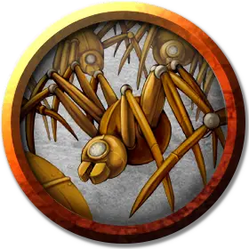

Рой механических пауков
Swarm of Mechanical Spiders
Средний рой крошечных Конструктов, без мировоззрения

Класс Доспеха 12 (природный доспех)
Хиты 22 (5к8)
Скорость 20 футов, лазая 20 футов
| мод | спас | ||
|---|---|---|---|
| СИЛ | 3 | −4 | −4 |
| ЛОВ | 13 | +1 | +1 |
| ТЕЛ | 10 | +0 | +0 |
| мод | спас | ||
|---|---|---|---|
| ИНТ | 1 | −5 | −5 |
| МДР | 7 | −2 | −2 |
| ХАР | 1 | −5 | −5 |
Уязвимость к урону электричество
Сопротивление урону дробящий, колющий, рубящий
Иммунитет к состояниям окаменение, опутанность, отравление, сбивание с ног, захват, паралич, очарование, испуг, ошеломление, истощение
Чувства слепое зрение 10 футов, пассивное Восприятие 8
Опасность 1/2 (100 опыта)
Бонус мастерства +2
Особенности
Рой. Рой может занимать пространство другого существа, и наоборот, и рой может перемещаться через любой проход, достаточный для Крохотных механических пауков. Рой не может восстанавливать хиты и получать временные хиты.
Паучье лазанье. Рой механических пауков может лазать по сложным поверхностям, включая потолки, без совершения проверок характеристик.
Чувство паутины. Находясь в контакте с паутиной, рой механических пауков знает точное местоположение всех существ, находящихся в контакте с этой же паутиной.
Хождение по паутине. Рой механических пауков игнорирует ограничения перемещения, вызванные паутиной.
Природа конструкта. Рой механических пауков не нуждается в воздухе, пище, питье или сне.
Действия
Укусы. Рукопашная атака оружием: +3 к попаданию, досягаемость 0 футов, одна цель в пространстве роя. Попадание: Колющий урон 10 (4к4), или колющий урон 5 (2к4), если у роя половина хитов или меньше.
Описание
Рой крошечных механических пауков, нападающий на любого, кто открывает сундук Джарлаксла, который находится на борту «Алого Марнепота»
См. дополнительно статью: "Бестиарий: Рои существ"